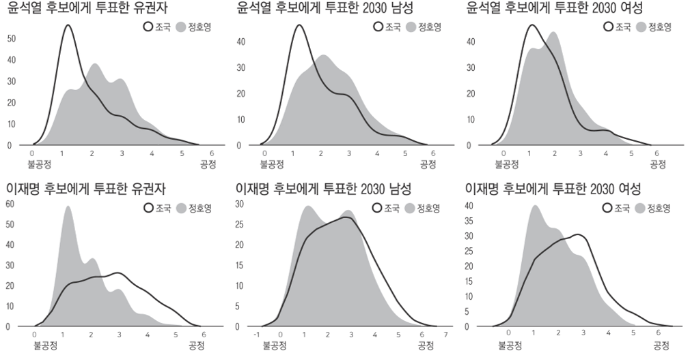
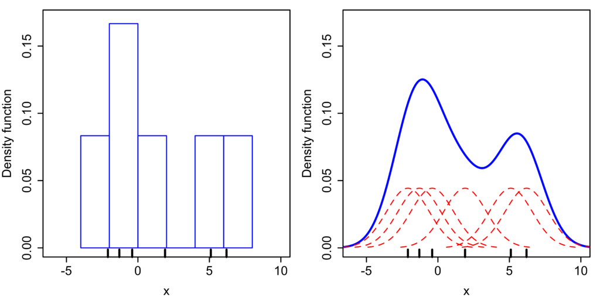
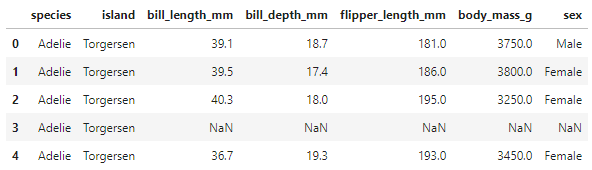
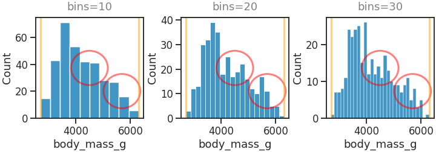
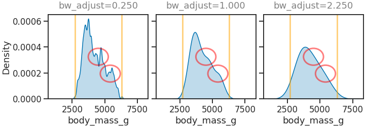
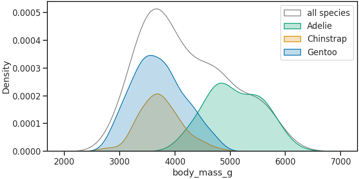
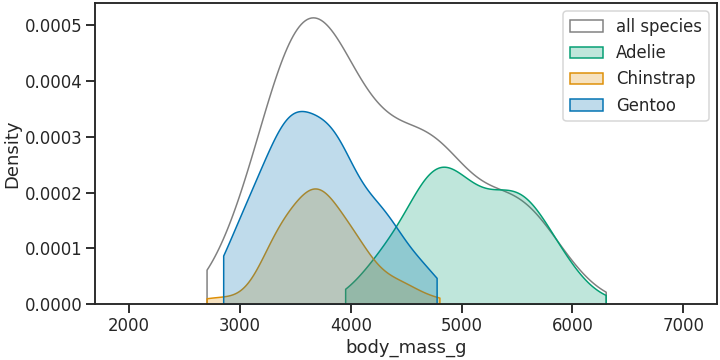
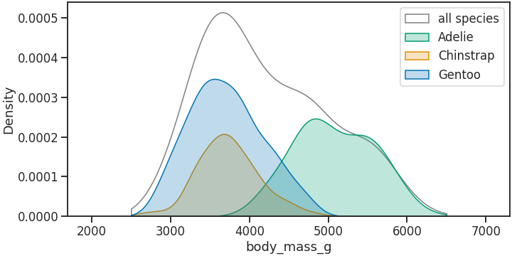
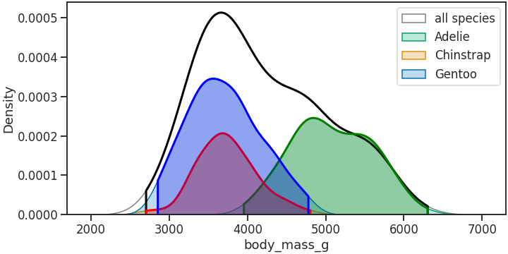

- 경향신문과 언더스코어가 공동으로 조사한 ‘부모찬스’기사가 실렸습니다.
- 기사 내용과 별개로, 이 기사에 활용된 KDE plot에 대해 여러 분들이 여러 의견을 표했습니다.
- KDE plot의 특징과 한계를 살펴봅니다.
언더스코어
경향신문: 두 얼굴의 공정(1) 조국과 정호영, 누가 더 ‘불공정’합니까?
경향신문: 정치 성향에 따라 부모찬스에 들이댄 ‘공정 잣대’는 달랐다
1. 시작
- 현대 대한민국의 가장 큰 화두 중 하나는 공정입니다.
- 기회의 공정, 결과의 공정, 또는 떨어질 때 떨어지더라도 이유라도 알자는 의미의 공정.
- 여러 면에서 여러 의미로 공정이 오르내리고 있으며 그 중 하나는 부모찬스입니다.
- 경향신문과 언더스코어에서 의미있는 분석을 시도하고 있습니다.

2. KDE plot
- 설문 결과 분포를 표현하기 위해 기사에 사용된 이와 같은 시각화 기법을 KDE plot이라고 합니다.
- Kernel Density Plot의 약자이며, 히스토그램의 단점을 보완하기 위해 제안된 방식입니다.
- 히스토그램이 구간별 데이터 수를 bar plot으로 표현하는 방식이라면 KDE plot은 각 데이터로 밀도 분포를 추정하여 합산하는 방식입니다.

3. seaborn histogram vs kdeplot
Pega Devlog: Ridgeline Plot
seaborn: kdeplot
seaborn: histplot
- Matplotlib과 scipy를 함께 사용해서 구현할 수도 있으나
- seaborn을 사용하면 간편하게 표현할 수 있습니다.
- 코드로 직접 seaborn histogram과 함께 비교해봅니다.
3.1. 예제 데이터
- seaborn에서 제공하는 Penguins dataset을 사용합니다.
- 펭귄들의 체중 데이터를 그림으로 그려보겠습니다.
1
2
3
4
5
6
7
8
9
10
11
12%matplotlib inline
import matplotlib.pyplot as plt
import seaborn as sns
sns.set_style("ticks")
sns.set_context("talk")
sns.set_palette("colorblind")
# penguins dataset 불러오기
df_peng = sns.load_dataset("penguins")
df_peng.head(5)
3.2. histogram vs KDE plot
histogram과 KDE plot을 차례로 그려 비교합니다.
histogram은 구간(bins) 수에 따라 모양이 변합니다.
이 글은 KDE plot의 특징에 집중하기 위해 코드 설명은 생략합니다.
1
2
3
4
5
6
7
8
9
10
11
12
13
14
15
16
17
18
19
20
21from matplotlib.patches import Circle
vmin, vmax = df_peng["body_mass_g"].min(), df_peng["body_mass_g"].max()
fig, axs = plt.subplots(ncols=3, figsize=(10, 3.5), constrained_layout=True)
for i, ax in enumerate(axs, 1):
sns.histplot(x="body_mass_g", data=df_peng, bins=10*i, ax=ax)
ax.set_title(f"bins={10*i}", pad=12, color="gray")
ymin, ymax = ax.get_ylim()
# changes
circle0 = Circle((0.5, 0.5), 0.17, fc="none", ec="r", lw=3, alpha=0.5, transform=ax.transAxes)
circle1 = Circle((0.8, 0.27), 0.17, fc="none", ec="r", lw=3, alpha=0.5, transform=ax.transAxes)
ax.add_patch(circle0)
ax.add_patch(circle1)
# data min, max
ax.axvline(vmin, c="orange", lw=3, alpha=0.5)
ax.axvline(vmax, c="orange", lw=3, alpha=0.5)
같은 데이터를 10, 20, 30개의 구간을 가진 histogram으로 표현했습니다.
bins 수가 늘어날 수록 보이지 않던 봉우리들이 보입니다. (붉은 원)
그런데 한편으로 bins 수를 데이터 수만큼 늘리는 경우를 생각하면, 그림이 별 의미가 없어질 것입니다.
y축 범위에서 bins가 증가할수록 최대 count가 적어지는 것을 볼 수 있습니다.
바구니의 범위가 좁아지니 데이터가 덜 담기는 것이 당연합니다.
같은 데이터를 KDE plot으로 그립니다.
seaborn.kdeplot에서는 Kernel size를 bw_adjust라는 매개변수로 조절할 수 있습니다.1
2
3
4
5
6
7
8
9
10
11
12
13
14
15
16
17
18fig, axs = plt.subplots(ncols=3, figsize=(10, 3.5), constrained_layout=True,
sharex=True, sharey=True)
for i, ax in enumerate(axs, 1):
sns.kdeplot(x="body_mass_g", data=df_peng, bw_adjust=i**2/4, fill=True, ax=ax)
ax.set_title(f"bw_adjust={i**2/4:.3f}", pad=12, color="gray")
ymin, ymax = ax.get_ylim()
# changes
circle0 = Circle((0.5, 0.5), 0.1, fc="none", ec="r", lw=3, alpha=0.5, transform=ax.transAxes)
circle1 = Circle((0.62, 0.3), 0.1, fc="none", ec="r", lw=3, alpha=0.5, transform=ax.transAxes)
ax.add_patch(circle0)
ax.add_patch(circle1)
# data min, max
ax.axvline(vmin, c="orange", lw=3, alpha=0.5)
ax.axvline(vmax, c="orange", lw=3, alpha=0.5)
sharex=True와sharey=True로 그래프의 x와 y 범위를 통일시켰습니다.bw_adjust가 커질수록 아이스크림이 녹듯 높이가 낮아지고 옆으로 퍼지는 모습이 보입니다.
붉은 원으로 표시한 디테일도 점점 사라집니다.
또한, 오렌지색 선으로 표시한 데이터의 하한선과 상한선을 점점 더 많이 넘어가고 있습니다.
- 데이터 범위를 넘어선다는 것이 KDE plot의 가장 큰 특징입니다.
- 제한된 데이터로 수집되지 않은 범위까지 추정을 해줄 수 있는 장점으로 작용함과 동시에
- 존재할 수 없는 데이터를 생성하는 단점으로 작용합니다. (ex. 나이 분포를 그리면 0보다 작은 범위가 생깁니다)
- 처음에 인용한 기사에서도 1~5점으로 조사했지만 1점이 안 되는 데이터와 5점이 넘는 데이터가 추정되었습니다.
3.3. KDE plot 기본
- KDE plot의 특징을 조금 더 알아보겠습니다.
- 먼저, 밀도 분포라는 개념을 사용하기 때문에 전체 넓이는 1로 조정됩니다.
1
2
3for i, ax in enumerate(axs):
area = Polygon(axs[0].collections[0].get_paths()[0].vertices).area
print(f"# area of KDE plot at axs[{i}] = {area:.3f}")- 실행 결과
1
2
3# area of KDE plot at axs[0]= 1.000
# area of KDE plot at axs[1]= 1.000
# area of KDE plot at axs[2]= 1.000
- 실행 결과
seaborn KDE plot 기능을 조금 더 알아봅니다.
펭귄 데이터셋에는 Adelie, Chinstrap, Gentoo 펭귄이 있습니다.
전체와 함께 이들 각각의 분포를 함께 살펴봅니다.
1
2
3
4
5
6
7
8
9
10
11fig, ax = plt.subplots(figsize=(10, 5), constrained_layout=True)
sns.kdeplot(x="body_mass_g", data=df_peng, fill=True, ax=ax, ec="gray", fc="w")
sns.kdeplot(x="body_mass_g", data=df_peng, fill=True, hue="species", ax=ax)
xmin, xmax = ax.get_xlim()
# legend
handles = ax.get_children()[:4]
labels = ["all species", "Adelie", "Chinstrap", "Gentoo"]
ax.legend(handles=handles, labels=labels)
세 종이 다른 분포를 보이며 겹쳐 그려져 있습니다.
Adelie 펭귄의 분포 일부가 전체의 합보다 높게 그려져 있습니다.
여기에서도 KDE plot이 정량적으로 부정확할 수 있음을 알 수 있습니다.
이렇게 나누어 그리면 각각의 넓이가 데이터 비율만큼 표현됩니다.
1
2
3
4
5areas = []
for i, (p, label) in enumerate(zip(ax.get_children()[:4], labels)):
area = Polygon(p.get_paths()[0].vertices).area
areas.append(area)
print(f"# area of KDE plot: {label} = {area:.3f}")- 실행 결과
1
2
3
4# area of KDE plot: all species = 1.000
# area of KDE plot: Adelie = 0.360
# area of KDE plot: Chinstrap = 0.199
# area of KDE plot: Gentoo = 0.441
- 실행 결과
3.4. 데이터 범위 밖 잘라내기
- 데이터 범위를 벗어나 그려지는 문제를 해결하기 위한 방법으로
cut매개변수를 제시하고 있습니다. - smoothing bandwidth에 곱해지는 상수로 기본값은 3입니다.
- 크기를 줄이면 적어지는데,
cut=0을 입력하면 입력된 데이터 범위까지만 끊습니다.1
2
3
4
5
6
7
8
9
10
11fig, ax = plt.subplots(figsize=(10, 5), constrained_layout=True)
sns.kdeplot(x="body_mass_g", data=df_peng, fill=True, ax=ax, ec="gray", fc="w", cut=0)
sns.kdeplot(x="body_mass_g", data=df_peng, fill=True, hue="species", ax=ax, cut=0)
ax.set_xlim(xmin, xmax)
# legend
handles = ax.get_children()[:4]
labels = ["all species", "Adelie", "Chinstrap", "Gentoo"]
ax.legend(handles=handles, labels=labels)
3.5. 가능한 데이터 범위 밖 잘라내기
- 수집된 데이터가 가능한 데이터의 일부인 경우가 많습니다.
- 이 때 데이터 값으로 끊으면 이 또한 왜곡이 될 수 있기 때문에, 특정 범위를 지정할 수 있습니다.
clip이라는 이름의 매개변수를 사용합니다. 여기서는 2500 ~ 6500 범위로 잘랐습니다.cut에 비해 덜 잘렸고, 이 범위 안에 있는 Chinstrap과 Gentoo의 오른쪽, 그리고 Adelie의 왼쪽은 전혀 잘리지 않았습니다.1
2
3
4
5
6
7
8
9
10
11fig, ax = plt.subplots(figsize=(10, 5), constrained_layout=True)
sns.kdeplot(x="body_mass_g", data=df_peng, fill=True, ax=ax, ec="gray", fc="w", clip=(2500, 6500))
sns.kdeplot(x="body_mass_g", data=df_peng, fill=True, hue="species", ax=ax, clip=(2500, 6500))
ax.set_xlim(xmin, xmax)
# legend
handles = ax.get_children()[:4]
labels = ["all species", "Adelie", "Chinstrap", "Gentoo"]
ax.legend(handles=handles, labels=labels)
3.6. 자른 이후의 넓이 확인
KDE plot은 밀도 함수이기 때문에 넓이 = 1로 설정된다고 했습니다.
그렇지만
cut이나clip을 적용하면 잘리는 만큼 넓이가 작아집니다.cut적용 전과 뒤를 겹쳐서 확인합니다.1
2
3
4
5
6
7
8
9
10
11
12
13
14
15fig, ax = plt.subplots(figsize=(10, 5), constrained_layout=True)
# without cut=0
sns.kdeplot(x="body_mass_g", data=df_peng, fill=True, ax=ax, ec="gray", fc="w")
sns.kdeplot(x="body_mass_g", data=df_peng, fill=True, hue="species", ax=ax)
# with cut=0
sns.kdeplot(x="body_mass_g", data=df_peng, fill=True, ax=ax, lw=3, ec="k", fc="#FFFFFF00", cut=0)
sns.kdeplot(x="body_mass_g", data=df_peng, fill=True, hue="species", ax=ax,
cut=0, lw=3, palette=["b", "r", "g"])
# legend
handles = ax.get_children()[:4]
labels = ["all species", "Adelie", "Chinstrap", "Gentoo"]
ax.legend(handles=handles, labels=labels)
cut이 적용된 그림은 그저 좌우가 잘릴 뿐임을 알 수 있습니다.그렇다면 넓이도 줄어들 것입니다.
1
2
3for i, (p, label, a) in enumerate(zip(ax.get_children()[4:8], labels, areas)):
area = Polygon(p.get_paths()[0].vertices).area
print(f"# area of KDE plot: {label} = {area:.3f} (cf. {a:.3f})")- 실행 결과
1
2
3
4# area of KDE plot: all species = 0.986 (cf. 1.000)
# area of KDE plot: Adelie = 0.353 (cf. 0.360)
# area of KDE plot: Chinstrap = 0.195 (cf. 0.199)
# area of KDE plot: Gentoo = 0.423 (cf. 0.441)
- 실행 결과
잘려지는 넓이가 보상되지 않고 있습니다.
데이터에 따라, 그리고 수집하는 숫자의 범위에 따라 얼마가 잘려질지는 알 수 없습니다.
기사에 나온 그림처럼 분포가 한쪽 끝에 치우쳐 있다면 훨씬 많이 잘려나갈 것입니다.
보완 알고리즘을 구현하려 해도 생각보다 복잡합니다. 단순하게 비율을 곱하는 것으로는 부족합니다.
4. 결론
- KDE plot은 매끈한 곡선으로 이루어져 보기 좋고 겹쳐 그리기 좋아 많이 사용됩니다.
- 그러나 확인했듯 단점이 적지 않습니다.
- KDE plot은 참고용으로만 사용하고, 실제 결론은 통계적 분석으로 냅시다.